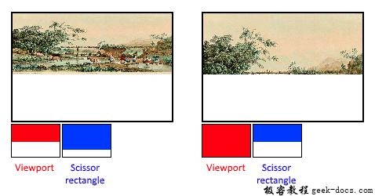

Vulkan 固有功能，早起的图形API在图形渲染管线的许多阶段提供了默认的状态。在Vulkan中，从viewport的大小到混色函数，需要凡事做到亲历亲为。在本章节中我们会填充有关固有功能操作的所有结构体。
顶点输入
VkPipelineVertexInputStateCreateInfo结构体描述了顶点数据的格式，该结构体数据传递到vertex shader中。它以两种方式进行描述:
Bindings:根据数据的间隙，确定数据是每个顶点或者是每个instance(instancing)Attribute描述:描述将要进行绑定及加载属性的顶点着色器中的相关属性类型。
因为我们将顶点数据硬编码到vertex shader中，所以我们将要填充的结构体没有顶点数据去加载。我们将会在vertex buffer章节中回来操作。
VkPipelineVertexInputStateCreateInfo vertexInputInfo = {};
vertexInputInfo.sType = VK_STRUCTURE_TYPE_PIPELINE_VERTEX_INPUT_STATE_CREATE_INFO;
vertexInputInfo.vertexBindingDescriptionCount = 0;
vertexInputInfo.pVertexBindingDescriptions = nullptr; // Optional
vertexInputInfo.vertexAttributeDescriptionCount = 0;
vertexInputInfo.pVertexAttributeDescriptions = nullptr; // Optional
pVertexBindingDescriptions和pVertexAttributeDescriptions成员指向结构体数组，用于进一步描述加载的顶点数据信息。在createGraphicsPipeline函数中的shaderStages数组后添加该结构体。
输入组件
VkPipelineInputAssemblyStateCreateInfo结构体描述两件事情:顶点数据以什么类型的几何图元拓扑进行绘制及是否启用顶点索重新开始图元。图元的拓扑结构类型topology枚举值如下:
- VK_PRIMITIVE_TOPOLOGY_POINT_LIST: 顶点到点
- VK_PRIMITIVE_TOPOLOGY_LINE_LIST: 两点成线，顶点不共用
- VK_PRIMITIVE_TOPOLOGY_LINE_STRIP: 两点成线，每个线段的结束顶点作为下一个线段的开始顶点
- VK_PRIMITIVE_TOPOLOGY_TRIANGLE_LIST: 三点成面，顶点不共用
- VK_PRIMITIVE_TOPOLOGY_TRIANGLE_STRIP: 每个但教训的第二个、第三个顶点都作为下一个三角形的前两个顶点
正常情况下，顶点数据按照缓冲区中的序列作为索引，但是也可以通过element buffer缓冲区自行指定顶点数据的索引。通过复用顶点数据提升性能。如果设置primitiveRestartEnable成员为VK_TRUE，可以通过0xFFFF或者0xFFFFFFFF作为特殊索引来分解线和三角形在_STRIP模式下的图元拓扑结构。
通过本教程绘制三角形，所以我们坚持按照如下格式填充数据结构:
VkPipelineInputAssemblyStateCreateInfo inputAssembly = {};
inputAssembly.sType = VK_STRUCTURE_TYPE_PIPELINE_INPUT_ASSEMBLY_STATE_CREATE_INFO;
inputAssembly.topology = VK_PRIMITIVE_TOPOLOGY_TRIANGLE_LIST;
inputAssembly.primitiveRestartEnable = VK_FALSE;
视窗和裁剪
Viewport用于描述framebuffer作为渲染输出结果目标区域。它的数值在本教程中总是设置在(0, 0)和(width, height)。
VkViewport viewport = {};
viewport.x = 0.0f;
viewport.y = 0.0f;
viewport.width = (float) swapChainExtent.width;
viewport.height = (float) swapChainExtent.height;
viewport.minDepth = 0.0f;
viewport.maxDepth = 1.0f;
记得交换链和它的images图像大小WIDTH和HEIGHT会根据不同的窗体而不同。交换链图像将会在帧缓冲区framebuffers使用，所以我们应该坚持它们的大小。
minDepth和maxDepth数值指定framebuffer中深度的范围。这些数值必须收敛在[0.0f, 1.0f]区间冲，但是minDepth可能会大于maxDepth。如果你不做任何指定，建议使用标准的数值0.0f和1.0f。
viewports定义了image图像到framebuffer帧缓冲区的转换关系，裁剪矩形定义了哪些区域的像素被存储。任何在裁剪巨型外的像素都会在光栅化阶段丢弃。它们的功能更像过滤器而不是定义转换关系。这个区别如下图所示。需要注意的是，对于图像比viewport尺寸大的情形，左侧的裁剪矩形只是众多可能的一个表现。

在本教程中我们需要将图像绘制到完整的帧缓冲区framebuffer中，所以我们定义裁剪矩形覆盖到整体图像:
VkRect2D scissor = {};
scissor.offset = {0, 0};
scissor.extent = swapChainExtent;
viewport和裁剪矩形需要借助VkPipelineViewportStateCreateInfo结构体联合使用。可以使用多viewports和裁剪矩形在一些图形卡，通过数组引用。使用该特性需要GPU支持该功能，具体看逻辑设备的创建。
VkPipelineViewportStateCreateInfo viewportState = {};
viewportState.sType = VK_STRUCTURE_TYPE_PIPELINE_VIEWPORT_STATE_CREATE_INFO;
viewportState.viewportCount = 1;
viewportState.pViewports = &viewport;
viewportState.scissorCount = 1;
viewportState.pScissors = &scissor;
光栅化
光栅化通过顶点着色器及具体的几何算法将顶点进行塑形，并将图形传递到片段着色器进行着色工作。它也会执行深度测试depth testing、面裁切face culling和裁剪测试，它可以对输出的片元进行配置，决定是否输出整个图元拓扑或者是边框(线框渲染)。所有的配置通过VkPipelineRasterizationStateCreateInfo结构体定义。
VkPipelineRasterizationStateCreateInfo rasterizer = {};
rasterizer.sType = VK_STRUCTURE_TYPE_PIPELINE_RASTERIZATION_STATE_CREATE_INFO;
rasterizer.depthClampEnable = VK_FALSE;
它的depthClampEnable设置为VK_TRUE，超过远近裁剪面的片元会进行收敛，而不是丢弃它们。它在特殊的情况下比较有用，像阴影贴图。使用该功能需要得到GPU的支持。
rasterizer.rasterizerDiscardEnable = VK_FALSE;
如果rasterizerDiscardEnable设置为VK_TRUE，那么几何图元永远不会传递到光栅化阶段。这是基本的禁止任何输出到framebuffer帧缓冲区的方法。
rasterizer.polygonMode = VK_POLYGON_MODE_FILL;
polygonMode决定几何产生图片的内容。下列有效模式:
- VK_POLYGON_MODE_FILL: 多边形区域填充
- VK_POLYGON_MODE_LINE: 多边形边缘线框绘制
- VK_POLYGON_MODE_POINT: 多边形顶点作为描点绘制
使用任何模式填充需要开启GPU功能。
rasterizer.lineWidth = 1.0f;
lineWidth成员是直接填充的，根据片元的数量描述线的宽度。最大的线宽支持取决于硬件，任何大于1.0的线宽需要开启GPU的wideLines特性支持。
rasterizer.cullMode = VK_CULL_MODE_BACK_BIT;
rasterizer.frontFace = VK_FRONT_FACE_CLOCKWISE;
cullMode变量用于决定面裁剪的类型方式。可以禁止culling，裁剪front faces，cull back faces 或者全部。frontFace用于描述作为front-facing面的顶点的顺序，可以是顺时针也可以是逆时针。
rasterizer.depthBiasEnable = VK_FALSE;
rasterizer.depthBiasConstantFactor = 0.0f; // Optional
rasterizer.depthBiasClamp = 0.0f; // Optional
rasterizer.depthBiasSlopeFactor = 0.0f; // Optional
光栅化可以通过添加常量或者基于片元的斜率来更改深度值。一些时候对于阴影贴图是有用的，但是我们不会在章节中使用，设置depthBiasEnable为VK_FALSE。
重采样
VkPipelineMultisampleStateCreateInfo结构体用于配置多重采样。所谓多重采样是抗锯齿anti-aliasing的一种实现。它通过组合多个多边形的片段着色器结果，光栅化到同一个像素。这主要发生在边缘，这也是最引人注目的锯齿出现的地方。如果只有一个多边形映射到像素是不需要多次运行片段着色器进行采样的，相比高分辨率来说，它会花费较低的开销。开启该功能需要GPU支持。
VkPipelineMultisampleStateCreateInfo multisampling = {};
multisampling.sType = VK_STRUCTURE_TYPE_PIPELINE_MULTISAMPLE_STATE_CREATE_INFO;
multisampling.sampleShadingEnable = VK_FALSE;
multisampling.rasterizationSamples = VK_SAMPLE_COUNT_1_BIT;
multisampling.minSampleShading = 1.0f; // Optional
multisampling.pSampleMask = nullptr; // Optional
multisampling.alphaToCoverageEnable = VK_FALSE; // Optional
multisampling.alphaToOneEnable = VK_FALSE; // Optional
在本教程中我们不会使用多重采样，但是可以随意的尝试，具体的参数请参阅规范。
深度和模板测试
如果使用depth 或者 stencil缓冲区，需要使用VkPipelineDepthStencilStateCreateInfo配置。我们现在不需要使用，所以简单的传递nullptr，关于这部分会专门在深度缓冲区章节中讨论。
颜色混合
片段着色器输出具体的颜色，它需要与帧缓冲区framebuffer中已经存在的颜色进行混合。这个转换的过程成为混色，它有两种方式:
- 将old和new颜色进行混合产出一个最终的颜色
- 使用按位操作混合old和new颜色的值
有两个结构体用于配置颜色混合。第一个结构体VkPipelineColorBlendAttachmentState包括了每个附加到帧缓冲区的配置。第二个结构体VkPipelineColorBlendStateCreateInfo包含了全局混色的设置。在我们的例子中仅使用第一种方式:
VkPipelineColorBlendAttachmentState colorBlendAttachment = {};
colorBlendAttachment.colorWriteMask = VK_COLOR_COMPONENT_R_BIT | VK_COLOR_COMPONENT_G_BIT | VK_COLOR_COMPONENT_B_BIT | VK_COLOR_COMPONENT_A_BIT;
colorBlendAttachment.blendEnable = VK_FALSE;
colorBlendAttachment.srcColorBlendFactor = VK_BLEND_FACTOR_ONE; // Optional
colorBlendAttachment.dstColorBlendFactor = VK_BLEND_FACTOR_ZERO; // Optional
colorBlendAttachment.colorBlendOp = VK_BLEND_OP_ADD; // Optional
colorBlendAttachment.srcAlphaBlendFactor = VK_BLEND_FACTOR_ONE; // Optional
colorBlendAttachment.dstAlphaBlendFactor = VK_BLEND_FACTOR_ZERO; // Optional
colorBlendAttachment.alphaBlendOp = VK_BLEND_OP_ADD; // Optional
这种针对每个帧缓冲区配置混色的方式，使用如下伪代码进行说明:
if (blendEnable) {
finalColor.rgb = (srcColorBlendFactor * newColor.rgb) <colorBlendOp> (dstColorBlendFactor * oldColor.rgb);
finalColor.a = (srcAlphaBlendFactor * newColor.a) <alphaBlendOp> (dstAlphaBlendFactor * oldColor.a);
} else {
finalColor = newColor;
}finalColor = finalColor & colorWriteMask;
如果blendEnable设置为VK_FALSE,那么从片段着色器输出的新颜色不会发生变化，否则两个混色操作会计算新的颜色。所得到的结果与colorWriteMask进行AND运算，以确定实际传递的通道。
大多数的情况下使用混色用于实现alpha blending，新的颜色与旧的颜色进行混合会基于它们的opacity透明通道。finalColor作为最终的输出:
finalColor.rgb = newAlpha * newColor + (1 - newAlpha) * oldColor;
finalColor.a = newAlpha.a;
可以通过一下参数完成:
colorBlendAttachment.blendEnable = VK_TRUE;
colorBlendAttachment.srcColorBlendFactor = VK_BLEND_FACTOR_SRC_ALPHA;
colorBlendAttachment.dstColorBlendFactor = VK_BLEND_FACTOR_ONE_MINUS_SRC_ALPHA;
colorBlendAttachment.colorBlendOp = VK_BLEND_OP_ADD;
colorBlendAttachment.srcAlphaBlendFactor = VK_BLEND_FACTOR_ONE;
colorBlendAttachment.dstAlphaBlendFactor = VK_BLEND_FACTOR_ZERO;
colorBlendAttachment.alphaBlendOp = VK_BLEND_OP_ADD;
可以在规范中找到所有有关VkBlendFactor和VkBlendOp的枚举值。
第二个结构体持有所有帧缓冲区的引用，它允许设置混合操作的常量，该常量可以作为后续计算的混合因子:
VkPipelineColorBlendStateCreateInfo colorBlending = {};
colorBlending.sType = VK_STRUCTURE_TYPE_PIPELINE_COLOR_BLEND_STATE_CREATE_INFO;
colorBlending.logicOpEnable = VK_FALSE;
colorBlending.logicOp = VK_LOGIC_OP_COPY; // Optional
colorBlending.attachmentCount = 1;
colorBlending.pAttachments = &colorBlendAttachment;
colorBlending.blendConstants[0] = 0.0f; // Optional
colorBlending.blendConstants[1] = 0.0f; // Optional
colorBlending.blendConstants[2] = 0.0f; // Optional
colorBlending.blendConstants[3] = 0.0f; // Optional
如果需要使用第二种方式设置混合操作(bitwise combination), 需要设置logicOpEnable为VK_TURE。二进制位操作在logicOp字段中指定。在第一种方式中会自动禁止，等同于为每一个附加的帧缓冲区framebuffer关闭混合操作，blendEnable为VK_FALSE。colorWriteMask掩码会用确定帧缓冲区中具体哪个通道的颜色受到影响。它也可以在两种方式下禁止，截至目前，片段缓冲区向帧缓冲区中输出的颜色不会进行任何变化。
动态修改
之前创建的一些结构体的状态可以在运行时动态修改，而不必重新创建。比如viewport的大小,line width和blend constants。如果需要进行这样的操作，需要填充VkPipelineDynamicStateCreateInfo结构体:
VkDynamicState dynamicStates[] = {
VK_DYNAMIC_STATE_VIEWPORT,
VK_DYNAMIC_STATE_LINE_WIDTH
};VkPipelineDynamicStateCreateInfo dynamicState = {};
dynamicState.sType = VK_STRUCTURE_TYPE_PIPELINE_DYNAMIC_STATE_CREATE_INFO;
dynamicState.dynamicStateCount = 2;
dynamicState.pDynamicStates = dynamicStates;
在绘制的过程中指定这些数据，这会导致忽略之前的相关数值。我们会在后续的章节中回过头来讨论。如果没有任何需要动态修改的数值清设置为nullptr。
管道布局
可以在着色器中使用uniform，它是类似与动态状态变量的全局变量，可以在绘画时修改，可以更改着色器的行为而无需重新创建它们。它们通常用于将变换矩阵传递到顶点着色器或者在片段着色器冲创建纹理采样器。
这些uniform数值需要在管线创建过程中，通过VkPipelineLayout对象指定。即使在后续内容中用到，我们也仍然需要创建一个空的pipeline layout。
创建类成员变量持有该对象，因为我们在后续章节中的函数中引用它:
VkPipelineLayout pipelineLayout;
在createGraphicsPipeline函数中创建对象:
VkPipelineLayoutCreateInfo pipelineLayoutInfo = {};
pipelineLayoutInfo.sType = VK_STRUCTURE_TYPE_PIPELINE_LAYOUT_CREATE_INFO;
pipelineLayoutInfo.setLayoutCount = 0; // Optional
pipelineLayoutInfo.pSetLayouts = nullptr; // Optional
pipelineLayoutInfo.pushConstantRangeCount = 0; // Optional
pipelineLayoutInfo.pPushConstantRanges = 0; // Optionalif (vkCreatePipelineLayout(device, &pipelineLayoutInfo, nullptr, &pipelineLayout) != VK_SUCCESS) {
throw std::runtime_error("failed to create pipeline layout!");
}
该结构体还指定了push常量，这是将动态值传递给着色器的拎一个方式。pipeline layout可以在整个程序的生命周期内引用，所以它在程序退出的时候进行销毁。
void cleanup() {
vkDestroyPipelineLayout(device, pipelineLayout, nullptr);
...
}
结论
这就是所有有关fixed-function的内容，看起来有很多的工作去做，值得庆幸的是我们几乎了解了所有有关渲染管线的内容。这个过程减少了因为不了解某些组件的默认状态，而造成运行时碰到未知行为的可能性。
然而，在我们可以最终创建图形管线之前，还有一个对象需要创建，它就是render pass。


“是否启用顶点索重新开始图元”，英文原文是“ if primitive restart should be enabled”，“primitive restart”应该翻译为“图元重启”
早起的图形API —-> 早期的图形API